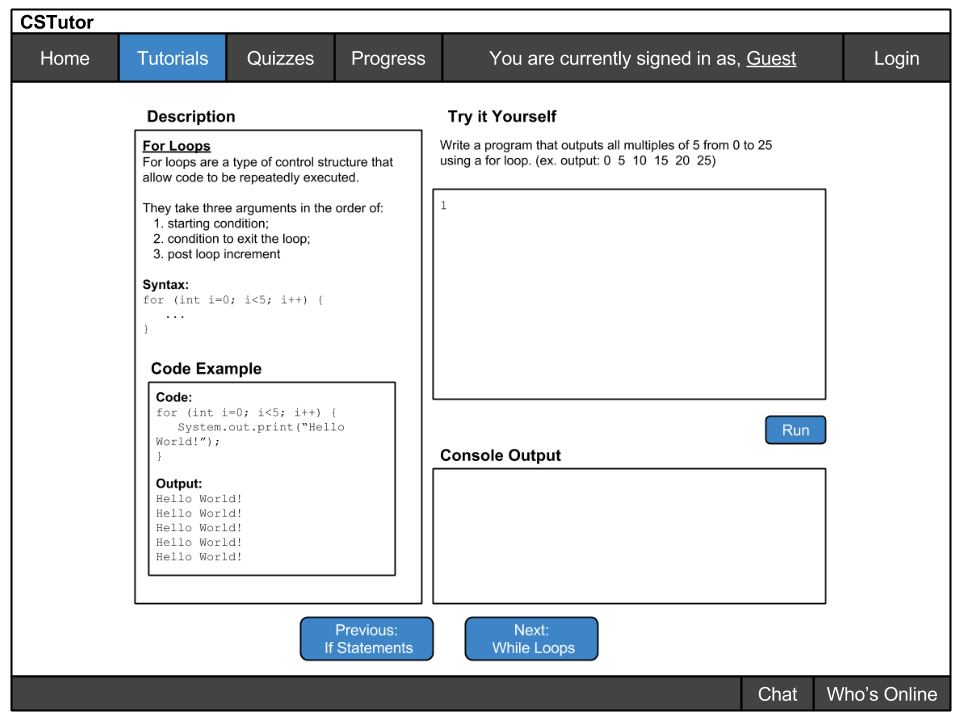
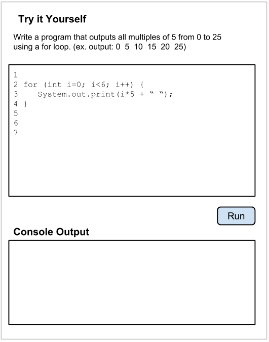
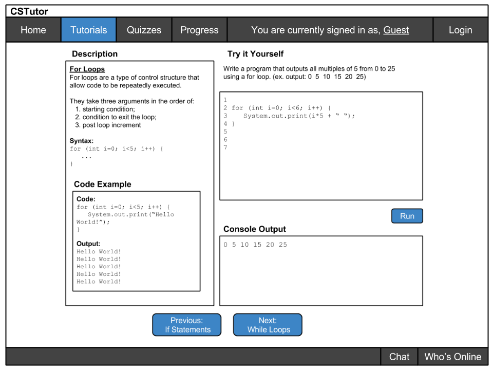

This section shows how a user would interact with the tutorial. Authors can direct to this page by clicking the "Preview" button from the Author's tutorial editing page. Students are directed here after choosing the tutorial from the high level manager. The following image shows what the page looks like initially:
From this view, a few more elements are added to the page that weren't necessary for editing. Specifically, these elements are the text editor and interactive console.
The text editor allows the student to enter their own code, and see what the output will be in the console below. The text editor by default is blank, but can either have the option of being preloaded with some type of example code. Alternatively the students may copy/paste code from the Code Example section.
Depending on the language, students will be able to use the interpreter to see the values of their variables within the console after running. If a program uses any type of GUI, the console will open a pop up window containing that content.
When the student clicks the "Run" button beneath the text editor, the corresponding output shows in the console. This is shown in the figure below.
Finally, the entire completed tutorial appears as the following image. From here the student may use the next and previous buttons to visit the surrounding tutorial topics.
